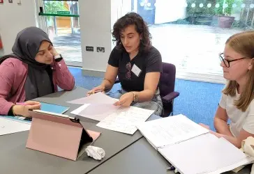

The exact arrangements differ between colleges and applicants should follow the information sent to them. However, the central activity in a Mathematics interview is normally solving and discussing mathematics with one or more interviewers. It is not a performance of memorised speeches.

A problem-solving discussion
An interviewer may introduce a problem verbally, on paper or through a shared screen. The applicant is then asked to explore it. Some questions begin with familiar material and develop into something less standard; others require the applicant to test examples before the general structure becomes clear.
The interviewer needs access to the applicant's reasoning. Silent working makes it difficult to distinguish productive thought from confusion, so applicants should explain important observations and decisions as they arise.
What happens when you become stuck?
Becoming stuck is normal. Difficult questions create the opportunity to see how an applicant responds when the route is not immediate. An interviewer may ask a smaller question, suggest examining a special case or draw attention to a useful feature of the problem.
If you are unsure what to do, useful responses include:
- describing what has already been established;
- trying a simpler or extreme case;
- drawing a graph or diagram;
- identifying which quantity controls the problem;
- checking whether a conjecture works in examples; and
- asking for a moment to organise your thoughts.
What good mathematical communication looks like
Strong communication is not constant commentary on every algebraic operation. It means making the mathematical direction visible: what you notice, why you choose a method, what a calculation establishes and whether the result makes sense.
If an interviewer challenges a statement, treat the challenge mathematically. Check the claim rather than defending it automatically. Correcting an error after examining it can demonstrate maturity and responsiveness.
How to prepare effectively
Practise explaining unfamiliar problems aloud
Choose problems that require exploration rather than standard exercises. Work with another person where possible and ask them to interrupt with questions such as “Why?”, “Is that always true?” and “What happens in this case?”
Become comfortable with purposeful pauses
Thinking before speaking is sensible. Practise signalling what you are considering, then take a short pause to work. This is different from disappearing into silent calculation for several minutes.
Use the working medium in advance
If the interview is online, practise writing with the equipment specified by the college. Check that diagrams, symbols and equations remain legible while you speak. The University provides current advice on its official interview-preparation page.
Watch a genuine mock discussion
The University of Cambridge has published a Mathematics admissions interview video. Use it to observe the rhythm of questioning, working and responding rather than trying to memorise the mathematics shown.
What to avoid
- Memorising polished answers to predicted questions.
- Assuming every pause or hint is negative evidence.
- Continuing with a method after evidence shows it cannot work.
- Hiding uncertainty behind vague language.
- Practising only alone and silently.
- Trying to display advanced knowledge that is irrelevant to the problem.
How should you judge the interview afterwards?
Applicants rarely have enough information to predict the outcome accurately. A question that felt difficult may have been difficult by design, and substantial guidance may still have produced useful evidence. Once the interview ends, record any practical lesson for later interviews, then avoid reconstructing every exchange as a verdict.
This is independent preparation advice and is not endorsed by the University of Cambridge. Interview formats and arrangements vary, so applicants should follow the current instructions from their college.